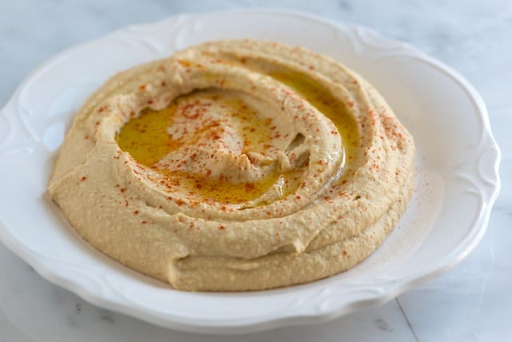
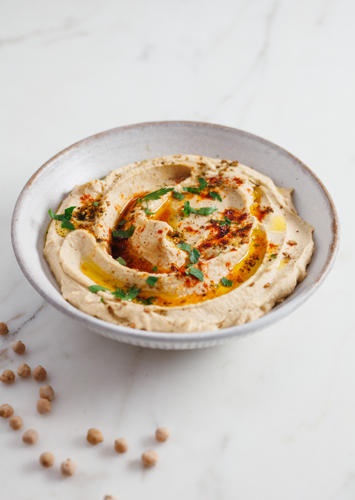

Quick Hummus Recipe

This recipe makes quick, tasty hummus, with no messing. It has been adapted from a number of different recipes that I have read over the years. Hummus is a delicious thick paste used heavily in Greek and Middle Eastern dishes. It is very tasty with salad, grilled meats and pitta breads.
Ingredients
| 1 can(400g) of chick peas (garbanzo beans) |
6 sundried tomatoes |
Half a red pepper |
| A pinch of cayenne pepper |
1 clove of garlic |
A dash of olive oil |
Instructions
- Remove the skin from the garlic, and chop coarsely
- Remove all the seeds and stalk from the pepper, and chop coarsely
- Add all the ingredients into a food processor
- Process all the ingredients into a paste
- If you want a coarse "chunky" hummus, process it for a short time
- If you want a smooth hummus, process it for a longer time
- For a different flavour, you could try blending in a small measure of lemon and coriander, chili pepper, lime and chipotle, harissa and mint, or spinach and feta cheese. Experiment and see what works for you.

Storage
- Refrigerate the finished hummus in a sealed container. You should be able to use it for about a week after you've made it.
- If it starts to become fizzy, you should definitely discard it.
- Hummus is suitable for freezing; you should thaw it and use it within a couple of months.